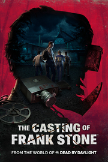

The Casting of Frank Stone
Detalles
|  | |
| Tiempo de juego | No Jugado |
| Última actividad | Nunca |
| Añadido | 11/6/2024 15:35:16 |
| Modificado | 11/8/2024 12:00:43 |
| Estado de finalización | No Jugado |
| Librería | Playnite |
| Fuente | 2TB GAS |
| Plataforma | PC (Windows) |
| Fecha de lanzamiento | 9/3/2024 |
| Puntuación de la Comunidad | 61 |
| Puntuación de la Crítica | |
| Puntuación de usuario | |
| Género | Aventura |
| Desarrollador | Supermassive Games |
| Editor | Behaviour Interactive Inc. |
| Característica | Cloud Saves Compat. Total Con Mando Coop. A Pantalla (Com)Partida Cooperativo Logros De Multijugador Pantalla Partida/Compartida Préstamo Familiar Un Jugador |
| Enlaces | Punto de encuentro Discusiones Guías Noticias Página de la tienda PCGamingWiki Logros |
| Tag | Ambientales Aventura Buena trama Cinematográficos Crimen Elige tu propia aventura Exploración Ficción interactiva Finales múltiples Investigación Las elecciones importan Lovecraftianos Misterio Mitos y leyendas Oscuros Sobrenaturales Suspense Terror Terror psicológico Un jugador |
Descripción
Si compras la Edición estándar de The Casting of Frank Stone, desbloquearás recompensas exclusivas en Dead by Daylight desde tu cuenta de Behaviour*, lo que incluye lo siguiente:
- Objeto cosmético: camiseta de "Murder Mill" para todos los supervivientes originales
- Insignia e imagen de "Murder Mill"
- 2 millones de puntos de sangre

El talento narrativo de Supermassive Games se mezcla con el universo de Dead by Daylight en un espeluznante juego de terror que no dejará indiferente.
La sombra de Frank Stone se cierne sobre Cedar Hills, un pequeño pueblo atormentado por su violento pasado. Como un grupo de adolescentes está a punto de descubrir, el sangriento legado de Stone ha dejado cicatrices en familias, varias generaciones y el tejido mismo de la realidad.


*Se necesita una cuenta de Behaviour con privilegios vinculados tanto para The Casting of Frank Stone como para Dead by Daylight para poder reclamar las recompensas.
- Objeto cosmético: camiseta de "Murder Mill" para todos los supervivientes originales
- Insignia e imagen de "Murder Mill"
- 2 millones de puntos de sangre
El talento narrativo de Supermassive Games se mezcla con el universo de Dead by Daylight en un espeluznante juego de terror que no dejará indiferente.
La sombra de Frank Stone se cierne sobre Cedar Hills, un pequeño pueblo atormentado por su violento pasado. Como un grupo de adolescentes está a punto de descubrir, el sangriento legado de Stone ha dejado cicatrices en familias, varias generaciones y el tejido mismo de la realidad.
Un misterio de proporciones cósmicas
En las entrañas de una acería de Oregón, los grotescos crímenes de un sádico asesino evocan horrores inimaginables. Hurga en el misterio de Cedar Hills de la mano de un plantel original de personajes y embárcate en una retorcida aventura donde nada es lo que parece.Elige tu destino
Todas las decisiones que tomes encauzarán la historia y alterarán el destino de sus personajes. En una trama repleta de golpes emocionales y horrores indescriptibles, descubre cómo una simple decisión puede convertirse en un dilema descorazonador.Una pesadilla cautivadora
Para quienes disfrutan con lo desconocido y lo grotesco, la narrativa cinemática de Supermassive Games les ofrece nuevos niveles de emoción, inmersión e intensidad en un universo complejo y misterioso.Un mundo más allá de la niebla
Experimenta un nuevo enfoque al universo extendido de Dead by Daylight, el aclamado juego de terror multijugador de Behavior Interactive. Esta sombría historia original, repleta de giros escalofriantes, seguirá atormentándote aun después de haber llegado a su desenlace.*Se necesita una cuenta de Behaviour con privilegios vinculados tanto para The Casting of Frank Stone como para Dead by Daylight para poder reclamar las recompensas.